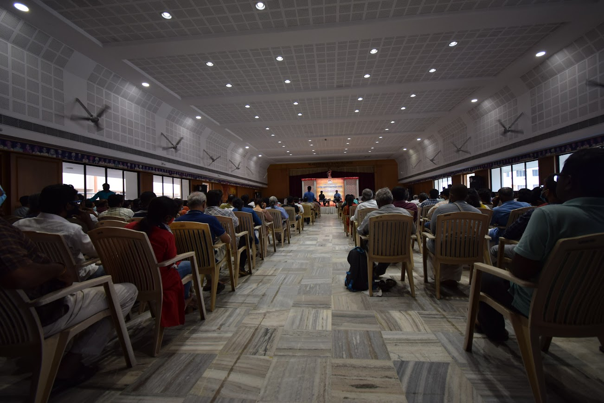
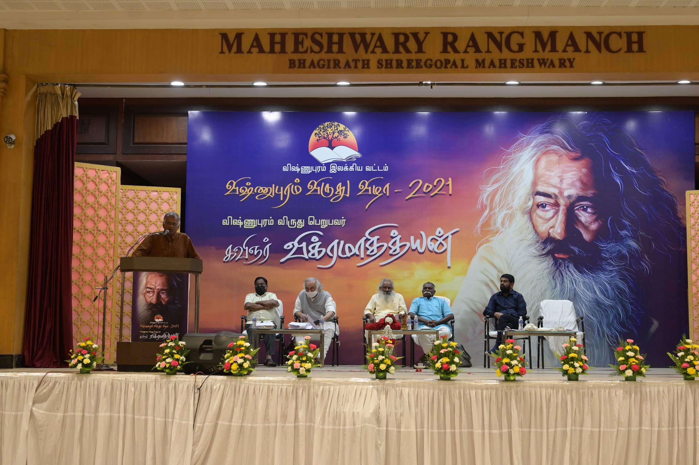
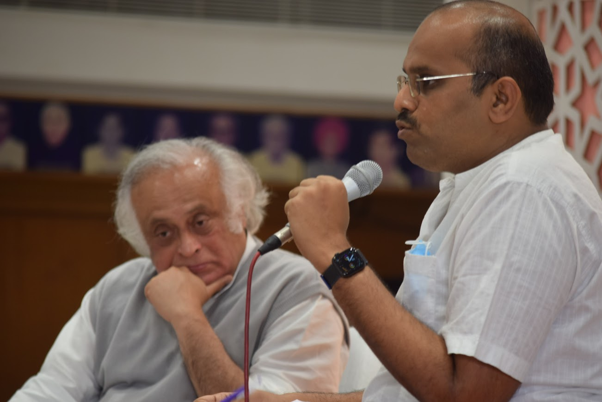
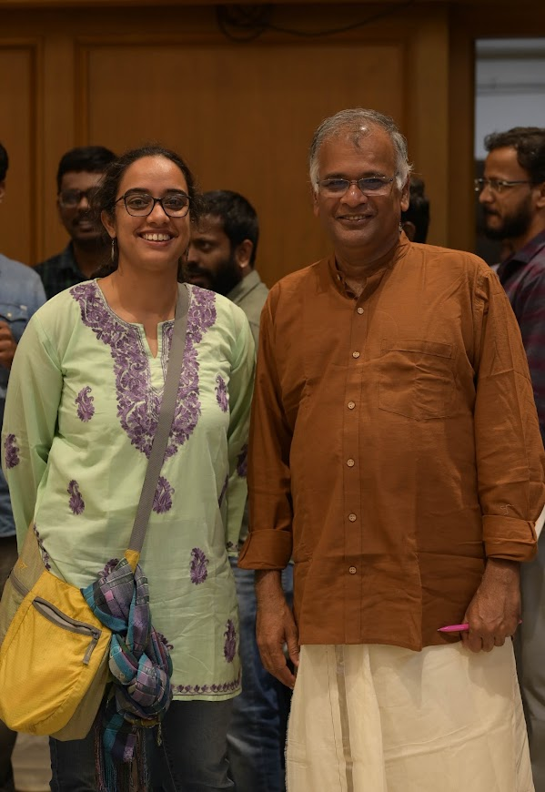
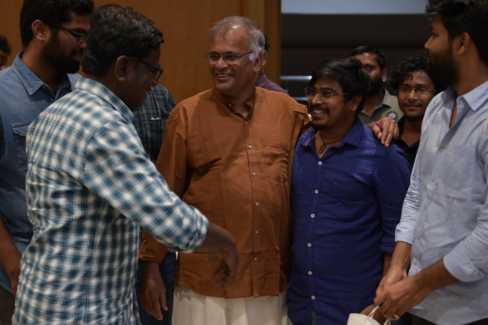
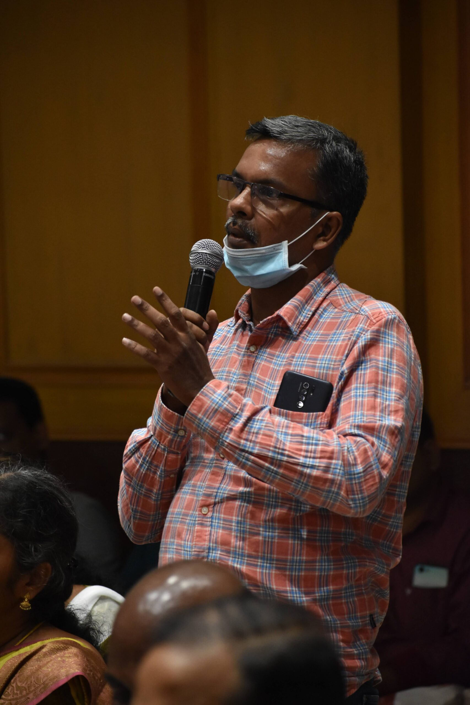
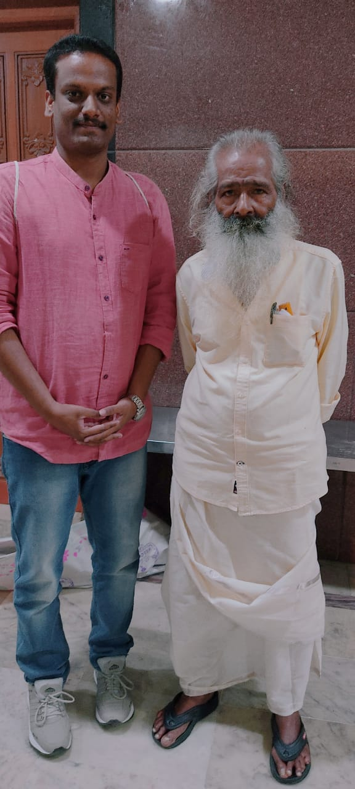
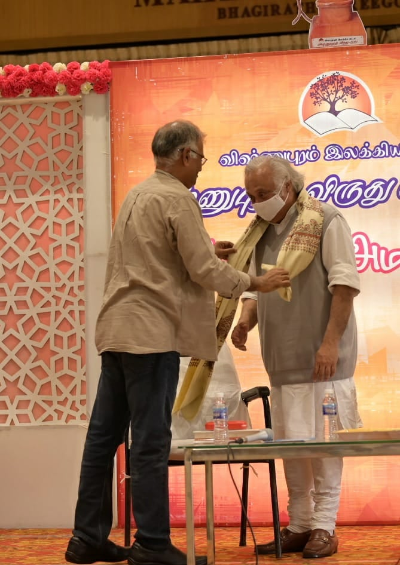
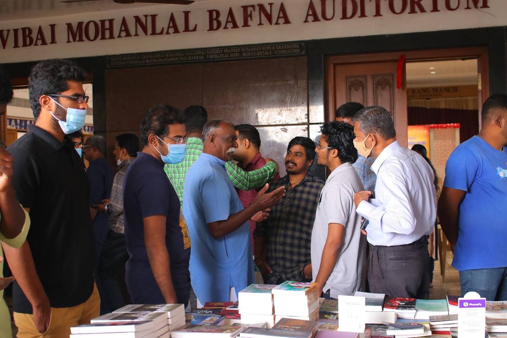

Living Tamil Association for World Literature (LTAWL)
The 2021 Vishnupuram Literary Circle Award went to the poet Vikramadityan, at a multi-day festival in Coimbatore that had by then grown into one of Tamil literature's largest reader-driven gatherings — translated in detail from the original Tamil accounts.
The poet Vikramadityan received the Vishnupuram Literary Circle Award for 2021. Rather than a conventional biography, Jeyamohan and the Circle chose to mark the honour with a critical anthology, Vikramadityan — Naadodiyin Kaalthadam ("Vikramadityan — The Wanderer's Footsteps"), gathering not scholarly analysis but the varied, often personal responses that Tamil readers across generations had brought to his poetry over the years — from Lakshmi Manivannan, a contemporary poet who had known him personally, to younger readers only recently discovering his work. Jeyamohan was explicit about the editorial choice: that heavily theoretical criticism too often obscures a poem rather than illuminating it, and that a poet like Vikramadityan is better served by a record of how real readers actually met his work.

By 2021, the Vishnupuram Award ceremony — now in its twelfth year since the first ceremony for A. Madhavan in 2010 — had grown into a festival spanning several days in Coimbatore, drawing an estimated 400 to 500 participants across its sessions, with young writers and readers making up a large share of the crowd. Writers including Bogdan Shankar, Manivannan and Somanathan took part in panel discussions representing markedly different aesthetic positions within contemporary Tamil literature, fielding audience questions on craft and literary philosophy: how a fiction writer negotiates ideological pressure, whether poetic language can survive inside prose narrative, and whether myth still offers a legitimate alternative to realist storytelling.


The organisational scale — booking rooms and catering for several hundred people, accommodating requests from participants old and new — did not, by Jeyamohan's account, dent the collegial warmth of the event; evening conversations often continued informally in hotel rooms long into the night.


The festival's second day brought a still wider range of voices. The Telugu poet Chinnaveerabhadrudu spoke on the evolution of modern Telugu poetry and its connections to wider Indian and Chinese literary movements. Vasanth explored the relationship between cinema and literature, while Jayaram Ramesh traced how Western readings of Buddhism — via Edwin Arnold's writing — had shaped modern Indian thinkers including Vivekananda and Gandhi. A dedicated session let readers respond directly and personally to Vikramadityan's poetry, in a stream-of-consciousness mode that Jeyamohan felt only a grassroots literary space like this could hold. A documentary on the poet, directed by Anand Kumar, drew a strong emotional response from the audience for capturing Vikramadityan's laughter, his manner of speech and the everyday world he lived in, rather than a conventional biographical account.


Across the two days, more than two hundred participants were housed between guest homes and hotels, with roughly fifty staying overnight and about a hundred sharing dinner together — writers and readers under the same roof, which Jeyamohan singled out as the thing that set Vishnupuram apart from more conventional literary institutions. The festival closed, as it often did, over tea and book sales, with several Tamil publishers finding an unusually engaged audience for serious literary work.



Translated and adapted from the original Tamil accounts: jeyamohan.in/160972, jeyamohan.in/160528 and jeyamohan.in/160978 · Watch: Houses and Streets